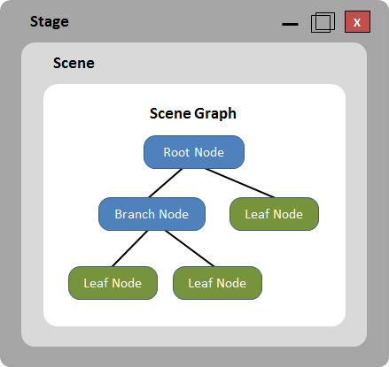
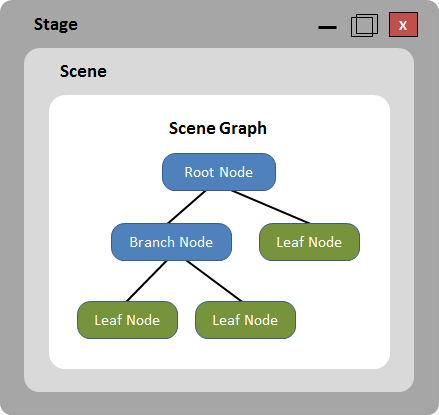

بناء تطبيقات JavaFX
بشكل عام, هناك ثلاث عناصر أساسية يجب دمجها مع بعضها حتى نحصل على واجهة مستخدم.
العناصر هي: Stage, Scene و Nodes كما يظهر في الصورة التالية.



بشكل عام, هناك ثلاث عناصر أساسية يجب دمجها مع بعضها حتى نحصل على واجهة مستخدم.
العناصر هي: Stage, Scene و Nodes كما يظهر في الصورة التالية.

الـ Stage هو النافذة بحد ذاتها. و هو يقسم النافذة إلى قسمين أساسين هما شريط القوائم و المنطقة التي يمكن فيها إضافة أشياء في النافذة.
إذاً كل المحتوى الذي سنضيفه في النافذة سيتم ربطه و وضعه على الـ Stage.
يمكن عرض الـ Stage بأربع أشكال مختلفة:
Decorated: هنا تكون خلفية النافذة بيضاء و تصميمها أجمل.
Undecorated: هنا تكون خلفية النافذة بيضاء.
Transparent: هنا تكون خلفية النافذة شفافة.
Utility: هنا تكون خلفية النافذة بيضاء و يوجد فقط زر للخروج في شريط القوائم.
ملاحظة: قد لا تعمل بعض هذه التصاميم على جميع الأجهزة و خاصةً الهواتف.
برمجياً تم تمثيل الـ Stage بكلاس خاص إسمه Stage و هو موجود في المسار javafx.stage.Stage.
الـ Stage لا يظهر ما لم تقم بإظهاره بنفسك بواسطة الدالة show().
في حال أردت تغيير شكل الـ Stage, عليك فعل هذا قبل إظهاره, أي قبل إستدعاء الدالة show().
الـ Scene هو المنطقة المخصصة في النافذة لوضع المحتوى.
المحتوى بداخل الـ Scene يوضع بشكل هرمي (Hierarchical) و سترى ذلك لاحقاً.
برمجياً تم تمثيل الـ Scene بكلاس خاص إسمه Scene و هو موجود في المسار javafx.scene.Scene.
يمكنك تحديد طول و عرض الـ Scene و أول شيء سيضاف فيها ( أي الـ Root Node ) في كونستركتور كائن الـ Scene.
كل كائن Stage ننشئه ننشئ له على الأقل كائن من الكلاس Scene لأننا بحاجة له حتى نضع فيه الأشياء التي نريد إضافتها في النافذة.
لا يمكن ربط كائن الـ Scene بأكثر من كائن Stage في نفس الوقت.
يمكن إنشاء أكثر من كائن Scene و ربط كائن واحد منهم في كل مرة بكائن الـ Stage الفكرة هنا أنه يمكنك إنشاء عدة صفحات ( أو حاويات ) و عرض الصفحة التي تريدها في النافذة على حسب تفاعل المستخدم.
أي شيء يتم إضافته في الـ Scene يقال له Node.
إذاً الـ Node يمكن أن يكون أحد الأشياء التالية:
أحد الأشكال الهندسية سواء 2D أو 3D مثل Rectangle - Circle - Box - Sphere.
أحد عناصر واجهة التحكم مثل Button - CheckBox - RadioButton.
يمكن أن يكون أحد أنواع الحاويات التي يمكنها أن تسع عدة Nodes مثل FlowPane - GridPane - StakPane.
يمكن أن يكون أحد عناصر الـ Media مثل Audio - Image - Video.
Root Node: هو أول Node يتم إضافته في الـ Scene.
Branch Node أو Parent Node: هو أي Node يحتوي على Node أو أكثر بداخله.
Leaf Node: هو الـ Node التي لا يوجد أي Node تحتها.
برمجياً, أي Node متوفر في JavaFX هو في الأصل مشتق من الكلاس Node الموجود في المسار javafx.scene.Node.
ستتعرف على جميع أنواع الـ Nodes المتوفرة في JavaFX لاحقاً في هذه الدورة.
الـ Scene Graph عبارة عن رسم توضيحي لكل الـ Nodes التي تم إضافتها في النافذة, و كما تلاحظ في الصورة التي في الأعلا يكون دائماً شكلها هرمي.
إذاً الـ Scene Graph هو مجرد رسم توضيحي للأشياء التي تم إضافتها في الـ Scene حتى يسهل فهمها و التعديل عليها في المستقبل.
الكلاس Application الموجود في المسار javafx.application.Application يحتوي على الدوال launch() - init() - start() - stop().
هذه الدوال تمثل دورة حياة أي تطبيق تم بناؤه في JavaFX و هي تستدعى بشكل تلقائي كما في الصورة التالية.
عند إنشاء تطبيق بواسطة JavaFX, يجب جعل الكلاس الأساسي في هذا التطبيق يرث من الكلاس Application.
الكلاس الذي يرث من الكلاس Application يعتبر الـ Main Class في هذا التطبيق.
بداخل الأساسي في التطبيق يجب أن تفعل Override للدالة start() التي ورثها من الكلاس Application و تضع فيها كود إنشاء النافذة الرئيسية في التطبيق.
عندما تفعل هاتين الخطوتين سيقوم مشغّل تطبيقات جافا ( أي الـ JVM ) بتنفيذ دوال الكلاس Application بشكل تلقائي و بنفس الترتيب الذي وضعناه في الصورة أعلاه.
ملاحظة: عند الوراثة من الكلاس Application تصبح غير مجبر على وضع الدالة main() في البرنامج. سترى ذلك لاحقاً.
الجدول التالي يحتوي على دوال الكلاس Application التي تستدعي بشكل تلقائي في كل تطبيق مبني بواسطة JavaFX.
| الدالة مع تعريفها | |
|---|---|
public static void launch(String... args)
تعتبر نقطة البداية في التطبيق حيث أنها أول دالة تتنفذ عند تشغيل التطبيق.عندما تتنفذ تقوم فقط باستدعاء الدالة init().مكان الباراميتر args يمكنك عدم وضع أي شيء, أو تمرير مصفوفة من النصوص, أو وضع العدد الذي تريده من النصوص مع وضع فاصلة بين كل نصين.ملاحظة: إذا لم تقم بتعريف الدالة main() في البرنامج سيتم إستدعاء الدالة launch() بشكل تلقائي عند تشغيل التطبيق.أما إذا قمت بتعريف الدالة main() فسيكون عليك إستدعاء launch() بداخلها حتى تتنفذ.ترمي الإستثناء IllegalStateException في حال تم إستدعاءها أكثر من مرة في التطبيق. |
|
public void init() throws Exception
تعتبر نقطة تمهيد التطبيق حيث أنه يمكنك أن تفعل لها Override في حال أردت أن يتم تنفيذ أي كود في لحظة إنشاء التطبيق.إنتبه: لا يمكنك كتابة كود إنشاء الواجهة الرئيسية للبرنامج فيها. ترمي الإستثناء Exception في حال حدث أي خطأ عندما يتم إستدعاءها. |
|
public abstract void start(Stage primaryStage) throws Exception
تعتبر نقطة تشغيل التطبيق و هي الدالة الوحيدة في الكلاس Application التي يجب أن تفعل لها Override لأنها معرفة كـ abstract.إذاً هذه الدالة تعتبر المكان الذي يجب أن تكتب فيه كود إنشاء الواجهة الرئيسية للبرنامج. و هي تستدعي بعد أن تتنفذ الدالة init().الباراميتر primaryStage يمثل الواجهة الرئيسية للتطبيق و التي يمكنك إظهارها بواسطة الدالة show().ترمي الإستثناء Exception في حال حدث أي خطأ عندما يتم إستدعاءها. |
|
public void stop()
تعتبر نقطة النهاية في التطبيق حيث أنه يمكنك أن تفعل لها Override في حال أردت أن يتم تنفيذ أي كود عند الخروج من التطبيق, مثل إغلاق أي شيء كان مفتوحاً من داخل التطبيق, أو حفظ أي عملية قام بها المستخدم قبل الخروج من التطبيق إلخ..ترمي الإستثناء Exception في حال حدث أي خطأ عندما يتم إستدعاءها. |
|
إذاً في كل تطبيق JavaFX تقوم ببنائه يجب أن تفعل Override للدالة start() و عندك الحرية في أن تفعل Override للدوال stop() و init().
المثال التالي يظهر لك كيف أننا إذا قمنا بإستدعاء الدالة launch() من الدالة main() سيؤدي ذلك إلى إستدعاء الدالة init() ثم الدالة start() عند تشغيل التطبيق و الدالة stop() عند الخروج منه.
import javafx.application.Application;
import javafx.stage.Stage;
public class Main extends Application {
// هذه أول دالة سيتم إستدعاءها عند تشغيل البرنامج
// init() و التي ستقوم بدورها باستدعاء الدالة launch() بداخل هذه الدالة قمنا باستدعاء الدالة
public static void main(String[] args) {
System.out.println("main() method is called");
launch();
}
@Override
public void init() {
System.out.println("init() method is called");
}
// init() سيتم استدعاء هذه الدالة بشكل تلقائي في حال تم استدعاء الدالة
@Override
public void start(Stage primaryStage) {
System.out.println("start() method is called");
primaryStage.show();
}
// سيتم استدعاء هذه الدالة عند الخروج من التطبيق
@Override
public void stop() {
System.out.println("stop() method is called");
}
}
•ستظهر لك النافذة التالية عند التشغيل.
•سنحصل على النتيجة التالية في الـ Console عند التشغيل مع الإشارة إلى أن السطر الأخير الذي قمنا بتعليمه باللون الأصفر سيظهر عند الخروج من التطبيق.
إذا جعلت الكلاس يرث من الكلاس Application و قمت بتعريف الدالة main() فيه.
في هذه الحالة تكون مجبر على إستدعاء الدالة launch() حتى يتم إستدعاء الدوال init() و start() و stop().
main() في تطبيقات JavaFXيمكنك عدم وضع الدالة main() في التطبيق الذي تبنيه بواسطة JavaFX لأنك عندما تجعل الكلاس الأساسي في التطبيق يرث من الكلاس Application سيفهم مشغّل تطبيقات جافا ( أي الـ JVM ) أن أول دالة سيتم إستدعاءها عند تشغيل البرنامج هي الدالة init() ما لم تقم بتعريف الدالة main().
المثال التالي يظهر لك أنه عند عدم وضع الدالة main() سيتم إعتبار الدالة init() هي نقطة البداية في التطبيق.
import javafx.application.Application;
import javafx.stage.Stage;
public class Main extends Application {
//هذه أول دالة سيتم إستدعاءها عند تشغيل البرنامج
@Override
public void init() {
System.out.println("init() method is called");
}
// init() سيتم استدعاء هذه الدالة بشكل تلقائي في حال بعد أن يتم إستدعاء الدالة
@Override
public void start(Stage primaryStage) {
System.out.println("start() method is called");
primaryStage.show();
}
// سيتم استدعاء هذه الدالة عند الخروج من التطبيق
@Override
public void stop() {
System.out.println("stop() method is called");
}
}
•ستظهر لك النافذة التالية عند التشغيل.
•سنحصل على النتيجة التالية في الـ Console عند التشغيل مع الإشارة إلى أن السطر الأخير الذي قمنا بتعليمه باللون الأصفر سيظهر عند الخروج من التطبيق.
في حال كنت تنوي إستخدام أحد العناصر الموجودة في Java Swing فإنك مجبر على وضع الدالة main() في البرنامج.
في حال كنت تستخدم بيئة تطوير ( IDE ) لا تحتوي على جميع الأدوات المتوفرة في JavaFX و تحديداً الأداة ( JavaFX Launcher ) التي تتولى تشغيل برامج JavaFX من داخل بيئة التطوير فإنك مجبر على وضع الدالة main() في البرنامج حتى لا يظهر لك خطأ مفاده أنه لا يمكن تشغيل البرنامج لأنه لم يتم العثور على الدالة main().
لهذا ستجد أننا وضعنا الدالة main() في جميع الأمثلة حتى تعمل جميع الأمثلة عندكم مهما كانت بيئة التطوير التي تعتمدون عليها و بدون الحاجة لإجراء أي تعديل على الكود.
في المثال التالي قمنا ببناء واجهة مستخدم بسيطة جداً باستخدام JavaFX حتى تعرف كيف يجب أن تفكر عند بناء أي تطبيق.
إنتبه: الهدف من هذا المثال هو تعليمك كيف تبدأ ببناء التطبيق خطوة خطوة و ليس إنشاء التطبيق بأفضل صورة ممكنة لأنك غير مستعد لهذا بعد.
import javafx.application.Application;
import javafx.collections.ObservableList;
import javafx.scene.Group;
import javafx.scene.Scene;
import javafx.stage.Stage;
import javafx.scene.text.Font;
import javafx.scene.text.Text;
public class Main extends Application {
@Override
public void start(Stage stage) {
// يمثل النص الذي نريد إضافته في النافذة Text هنا قمنا بإنشاء كائن من الكلاس
Text text = new Text("Welcome to harmash.com");
// هنا قمنا بتحديد حجم خط النص
text.setFont(new Font(42));
// هنا قمنا بتحديد مكان ظهور النص في النافذة
text.setX(60);
text.setY(160);
// في النافذة Root Node لأننا ننوي جعله الـ Group هنا قمنا بإنشاء كائن من الكلاس
Group root = new Group();
// root في الكائن text هنا قمنا بإضافة الكائن
root.getChildren().add(text);
// فيها و تحديد حجمها Node كأول root هنا قمنا بإنشاء محتوى النافذة مع تعيين الكائن
Scene scene = new Scene(root, 600, 300);
// هنا وضعنا عنوان للنافذة
stage.setTitle("Sample Application");
// أي وضعنا محتوى النافذة الذي قمنا بإنشائه للنافذة .stage في كائن الـ scene هنا وضعنا كائن الـ
stage.setScene(scene);
// هنا قمنا بإظهار النافذة
stage.show();
}
// هنا قمنا بتشغيل التطبيق
public static void main(String[] args) {
launch(args);
}
}
•ستظهر لك النافذة التالية عند التشغيل.
في JavaFX يوجد أنواع عديدة من الحاويات التي يمكنك إستخدامها لترتيب الأشياء التي تضعها في النافذة بالشكل الذي تريده.
جميع الحاويات تم بناؤها بطريقة زكية جداً لجعل المبرمج قادر على إضافة و حذف عناصر منها بكل سهولة أثناء عمل التطبيق.
ما فعلوه في الواقع, هو ربط كل حاوية بشكل إفتراضي بكائن نوعه ObservableList.
بعدها قالوا لنا التالي:
إذا أردت أن تضيف شيء في الحاوية, إستدعي فقط الدالة getChildren() التي ترجع لك كائن الـ ObservableList الخاص بهذه الحاوية.
بعدها يمكنك إستدعاء الدالة add() من هذا الكائن إذا أردت إضافة شيء واحد.
و يمكنك إستدعاء الدالة addAll() إذا أردت إضافة عدة أشياء دفعة واحدة.
إذا أردت أن تحذف شيء من الحاوية, إستدعي فقط الدالة getChildren() التي ترجع لك كائن الـ ObservableList الخاص بهذه الحاوية.
بعدها يمكنك إستدعاء الدالة remove() من هذا الكائن إذا أردت حذف شيء واحد.
و يمكنك إستدعاء الدالة removeAll() إذا أردت حذف جميع الأشياء الموجودة فيها دفعة واحدة.
 محرر الويب
محرر الويب نظام الألوان
نظام الألوان محول الوحدات
محول الوحدات محلل عناوين الشبكات
محلل عناوين الشبكات